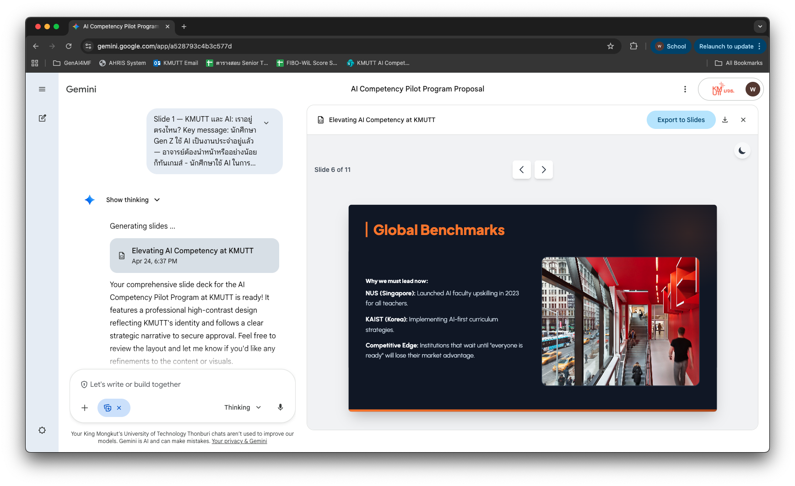
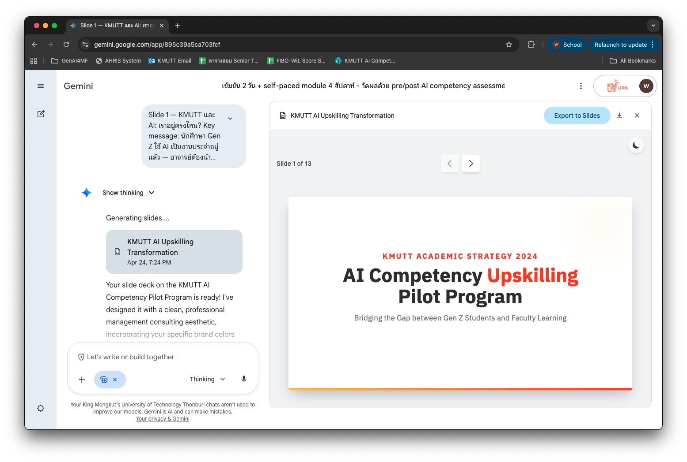

ทำสไลด์นำเสนอด้วย AI¶
ปัญหาที่เกิดขึ้นบ่อยที่สุดตอนทำสไลด์: เปิด PowerPoint หรือเครื่องมือ AI ก่อน แล้วค่อยคิดว่าจะพูดอะไร — ผลที่ได้คือสไลด์ที่ดูดีแต่เนื้อหาไม่แน่น หรือเนื้อหาแน่นแต่ยัดใส่สไลด์เกินไป
วิธีที่ถูกต้อง: คิดเนื้อหาก่อน ออกแบบทีหลัง — และใช้คนละเครื่องมือ
หน้านี้สอน 2 ขั้นตอน โดยใช้สถานการณ์จริง: ทำสไลด์โน้มน้าวทีม SOLA มหาวิทยาลัย KMUTT ให้รับโปรแกรม AI competency สำหรับอาจารย์และบุคลากร
- ใช้ ChatGPT หรือ Claude กลั่นเนื้อหา ให้อยู่ในรูปแบบที่พร้อมทำสไลด์
- ป้อนผลลัพธ์เข้า Gemini Canvas พร้อม prompt ที่ควบคุม brand และ layout
แบบฝึกหัดที่ 1: กลั่นเนื้อหาด้วย ChatGPT หรือ Claude¶
สถานการณ์: คุณเพิ่งประชุมกับทีม SOLA ที่ KMUTT และต้องทำสไลด์โน้มน้าวให้อนุมัติโปรแกรม AI competency สำหรับอาจารย์ — เลือกกรณีที่ตรงกับตัวคุณจาก 2 แบบด้านล่าง
ขั้นตอนนี้ยังไม่ต้องเปิด Gemini Canvas เลย ทำใน ChatGPT หรือ Claude ก่อน
กรณีที่ 1 — มีแค่ notes คร่าว ๆ จากการประชุม¶
ลองทำ¶
ฉันต้องทำ presentation เรื่อง: ข้อเสนอโปรแกรม AI Competency สำหรับอาจารย์และบุคลากร SOLA มหาวิทยาลัย KMUTT
ผู้ฟัง: คณะผู้บริหาร SOLA ที่ต้องตัดสินใจอนุมัติโปรแกรม — มีทั้งคนที่สนับสนุน AI และคนที่ยังไม่แน่ใจ
เป้าหมาย: ให้ผู้บริหาร SOLA อนุมัติ pilot program 1 ภาคเรียนกับอาจารย์ 20 คน
จำนวนสไลด์: ไม่เกิน 6 สไลด์
เวลานำเสนอ: 15 นาที
ข้อมูลที่ฉันมี:
- อาจารย์ส่วนใหญ่ใช้ AI แบบลองผิดลองถูก ไม่มีทิศทาง
- นักศึกษา Gen Z ใช้ AI อยู่แล้ว อาจารย์ตามไม่ทัน
- UNESCO มี AI Competency Framework สำหรับครูอาจารย์ปี 2024
- เสนอ pilot 20 คน workshop 2 วัน + module 4 สัปดาห์
- ต้นทุนประมาณ 60,000–80,000 บาท
- SOLA เป็นหน่วยงานที่เหมาะที่สุดใน KMUTT ที่จะนำเรื่องนี้
ช่วยทำ slide outline ที่:
- แต่ละสไลด์มี: ชื่อสไลด์ (title), key message 1 ประโยค, bullet ไม่เกิน 3 ข้อ
- เรียงเรื่องให้ไหลตามโครงสร้าง: ทำไม (context) → อะไร (content) → แล้วยังไง (call to action)
- ภาษาไทย กระชับ
5 อย่างที่ต้องระบุทุกครั้ง
หัวข้อ · ผู้ฟัง · เป้าหมาย · จำนวนสไลด์ · เวลานำเสนอ — ถ้าไม่บอก AI จะเดาเอง แล้วได้ outline ที่ดูดีแต่ไม่ตรงกับห้องที่เราจะไปพูดจริง จำนวนสไลด์กับเวลาเป็นตัวบังคับให้ AI ตัดสิ่งที่ไม่จำเป็นทิ้งด้วย
ตัวอย่างผลลัพธ์ที่ได้
Slide 1 — KMUTT และ AI: เราอยู่ตรงไหน? Key message: นักศึกษา Gen Z ใช้ AI เป็นงานประจำอยู่แล้ว — อาจารย์ต้องนำหน้าหรืออย่างน้อยก็ทันเกม - นักศึกษาใช้ AI ในการเรียน วิจัย และงานกลุ่มทุกวัน - อาจารย์ส่วนใหญ่ยังใช้แบบลองผิดลองถูก ไม่มี framework - ช่องว่างนี้กำลังกว้างขึ้นทุกภาคเรียน
Slide 2 — AI Competency คืออะไร (ไม่ใช่แค่ใช้ ChatGPT เป็น) Key message: AI competency คือรู้จักเลือกใช้ ตั้งคำถาม และรับผิดชอบผลลัพธ์ - 3 ระดับ: Awareness (รู้จัก) → Application (ใช้ได้) → Integration (ฝังในการสอน) - อ้างอิง UNESCO AI Competency Framework for Teachers 2024 - SOLA มีภารกิจด้านการเรียนรู้ที่ตรงกับเนื้อหานี้มากที่สุดใน KMUTT
Slide 3 — ทำไม SOLA ต้องนำ ไม่ใช่รอ Key message: มหาวิทยาลัยที่รอให้ทุกคนพร้อมก่อนจึงค่อยเริ่ม จะไม่มีวันเริ่ม - NUS และ KAIST มีโปรแกรม AI upskilling สำหรับอาจารย์แล้วตั้งแต่ปี 2023 - SOLA ในฐานะหน่วยงานด้านการเรียนรู้คือ natural owner ของเรื่องนี้ - การเริ่มเร็วกว่าคือข้อได้เปรียบ ไม่ใช่ความเสี่ยง
Slide 4 — สิ่งที่เสนอ: Pilot Program 1 ภาคเรียน Key message: เริ่มเล็ก วัดผล แล้วขยาย — ไม่ได้ขอ commit ทั้งมหาวิทยาลัยตั้งแต่วันแรก - กลุ่ม pilot: อาจารย์และบุคลากร 20 คน คัดเลือกจากหลายคณะ - รูปแบบ: Workshop เข้มข้น 2 วัน + self-paced module 4 สัปดาห์ - วัดผลด้วย pre/post AI competency assessment
Slide 5 — ต้นทุนและสิ่งที่คาดหวัง Key message: ลงทุน 60,000–80,000 บาท เพื่อให้ได้ framework และบุคลากรนำร่องที่พร้อม scale - ค่าใช้จ่าย: ~60,000–80,000 บาท รวม content, facilitator, และ assessment - ผลลัพธ์ที่วัดได้: อาจารย์ 20 คนผ่าน competency threshold + blueprint สำหรับการขยายต่อ - ระยะเวลา: 1 ภาคเรียน เริ่มได้ทันทีถ้าอนุมัติภายในเดือนนี้
Slide 6 — ขอ Approve อะไร Key message: ต้องการ 2 อย่าง: อนุมัติงบ และ assign ผู้ประสานงาน 1 คน - อนุมัติงบ pilot และกำหนดกลุ่มอาจารย์ภายใน 2 สัปดาห์ - SOLA assign coordinator — ทีมผู้จัดรับผิดชอบ content ทั้งหมด - นัด kickoff ภายในสิ้นเดือน
กรณีที่ 2 — ต้องหาข้อมูลจากอินเทอร์เน็ตก่อน¶
ตัวอย่าง: คุณรู้ว่าอยากโน้มน้าวด้วยตัวเลขและหลักฐาน แต่ยังไม่มีข้อมูลในมือ — ต้องหาก่อน
ใช้ ChatGPT (เปิด Browse) หรือ Perplexity AI ซึ่งค้นอินเทอร์เน็ตได้และอ้างอิง source ให้
Step 1 — ให้ AI ค้นข้อมูลและรวบรวม evidence¶
ฉันกำลังทำ presentation โน้มน้าวทีมบริหาร SOLA มหาวิทยาลัย KMUTT ให้อนุมัติโปรแกรม AI competency สำหรับอาจารย์และบุคลากร
ช่วยค้นหาและรวบรวมข้อมูลต่อไปนี้:
1. มหาวิทยาลัยชั้นนำในเอเชียหรือระดับโลกที่มีโปรแกรม AI upskilling สำหรับอาจารย์โดยเฉพาะ — มีตัวอย่างอะไรบ้าง และทำอะไร?
2. มี framework หรือ guideline ระดับนานาชาติเกี่ยวกับ AI competency สำหรับอาจารย์ที่อ้างอิงได้ (เช่น UNESCO, EU, ISTE)?
3. มีสถิติเกี่ยวกับ employer demand for AI skills ในตลาดแรงงาน Southeast Asia หรือไทย?
4. ถ้ามีมหาวิทยาลัยไทยที่เริ่มทำเรื่องนี้แล้ว มีตัวอย่างไหมบ้าง?
สำหรับแต่ละข้อ ระบุ source และปีของข้อมูลด้วย
ข้อมูลจาก AI Search ต้องตรวจก่อนนำไปใช้
- คลิกตรวจ source ที่ AI อ้างถึงทุกอัน — Perplexity ให้ลิงก์มาด้วย ให้เปิดดูว่า source จริง ๆ บอกแบบนั้นหรือเปล่า ตัวเลขที่ AI รายงานอาจ paraphrase คลาดเคลื่อนได้
- ระวัง source ที่เก่าเกินไป — ข้อมูล AI เปลี่ยนเร็ว ถ้า source เก่ากว่า 2023 ให้หาข้อมูลใหม่ทดแทน
- ตัวเลข % และสถิติ ต้องอ่านต้นฉบับโดยตรงก่อนใส่สไลด์
👉 วิธีตรวจ citation อย่างละเอียด ดูหน้า ค้นคว้าหาข้อมูล
Step 2 — สร้าง slide outline จาก evidence ที่ตรวจแล้ว¶
นี่คือข้อมูลที่ค้นหามาและตรวจสอบแล้ว:
[วาง evidence ที่ verify แล้วจาก Step 1]
ช่วยนำข้อมูลเหล่านี้มาสร้าง slide outline โน้มน้าวให้ SOLA มหาวิทยาลัย KMUTT อนุมัติโปรแกรม AI competency สำหรับอาจารย์:
- ใช้ evidence เป็นหลักฐานสนับสนุน ไม่ใช่แค่บอกว่า AI สำคัญ
- แต่ละสไลด์: title + key message + bullet ไม่เกิน 3 ข้อ
- เรียงเรื่อง: โลกไปถึงไหนแล้ว → มาตรฐานคืออะไร → SOLA ควรทำอะไร
- ภาษาไทย
แบบฝึกหัดที่ 2: ป้อน outline เข้า Gemini Canvas¶
Gemini Canvas คือฟีเจอร์ใน Gemini ที่สร้างสไลด์ในหน้าเดียวกัน แล้ว export เป็น Google Slides ได้โดยตรง ฟรี ไม่ต้องสมัครเพิ่ม
วิธีทำ: เปิด Gemini → เปิดโหมด Canvas → วาง outline ที่ได้จากแบบฝึกหัดที่ 1 ลงไปทั้งก้อน

ทำให้ presentation ออกมาเป็นแบรนด์ขององค์กร¶
เติม prompt นี้ต่อท้ายได้เลย:
Color palette: Primary Yellow #FFC72C and Orange #FA4616 as accent and highlight colors. Use Blue-Grey #7B8189 for supporting text and dividers. Please only use Solid White for backgrounds. Never use more than 5 colors in a single infographic.
Typography: Bold, modern sans-serif for headlines and content. Content might be in Thai mixed with English. Use IBM Plex Sans for English, and IBM Plex Sans Thai for Thai. Never mix in additional typeface.

👉 ดูตัวอย่างสไลด์จริงที่สร้างด้วย pipeline นี้ได้ที่หน้า ตัวอย่างสไลด์ที่สร้างด้วย AI
สรุป: Pipeline ที่ใช้ได้กับทุก presentation¶
3 ขั้นตอนที่ถูกลำดับ
- กลั่นเนื้อหาก่อน (ChatGPT / Claude / Perplexity) — เริ่มด้วย source information ที่ดี พรอมต์จนได้ outline ที่เล่าเรื่องได้ชัดถูกใจ
- สร้างสไลด์ (Gemini Canvas) — ป้อน outline + brand spec → export เป็น Google Slides
- ปรับ brand และ speaker notes (Google Slides + ChatGPT/Claude) — apply template, เพิ่ม logo, เขียน notes
ข้อผิดพลาดที่เกิดบ่อยที่สุด
- เปิด Gemini Canvas ก่อนคิดเนื้อหา — ผลคือสไลด์ที่หน้าตาดีแต่ไม่รู้จะพูดอะไร หรือ AI เติมเนื้อหาสมมติแทน
- วางเอกสารดิบยาว ๆ เข้า Canvas โดยตรง — AI จะเลือกเนื้อหาเอง ซึ่งมักไม่ตรงกับสิ่งที่เราอยากเน้น ให้กลั่นผ่าน ChatGPT/Claude ก่อนเสมอ
- ใส่ตัวเลขจาก AI โดยไม่ตรวจ — ทุกเครื่องมืออาจสร้างตัวเลขที่ไม่มีในข้อมูลต้นทาง ตัวเลขผิดในสไลด์ที่นำเสนอต่อผู้บริหารคือความน่าเชื่อถือที่เสียไปไม่คืน
- ไม่เปิดเผยบทบาทของ AI — งานที่ผู้ฟังคาดหวังว่าเราคิดเอง (ข้อเสนอโครงการ งานวิชาการ) ควรบอกให้ชัดว่า AI ช่วยตรงไหน